Money Manager Expense Tracker · Organized to match the app itself — read top to bottom, in the same order as the tabs
No topics match your search.
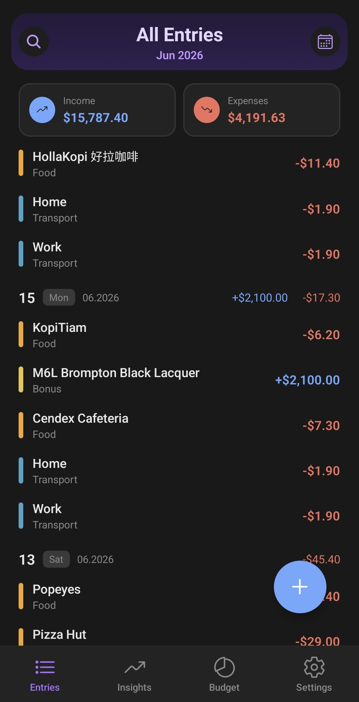
In Money Manager, every entry is organized on two levels: a Group and a Category.
Group is the big-picture bucket — think of it as the "type" of spending. Category sits underneath a Group, and gets more specific about exactly what the entry was for.
Here's an example:
So if you pay your electricity bill, you'd log it under Group: Bills, Category: Utility. Your phone plan would be Group: Bills, Category: Mobile — same Group, different Category.
This two-level structure keeps your Insights clean: you can zoom out and see "how much did Bills cost me this month?" or zoom in and see "how much specifically went to Internet?" — both from the same set of entries.
A good rule of thumb: if you're not sure whether something should be a new Group or just a new Category, ask whether it's a different type of spending (→ new Group) or just a more specific version of spending you already track (→ new Category under an existing Group).
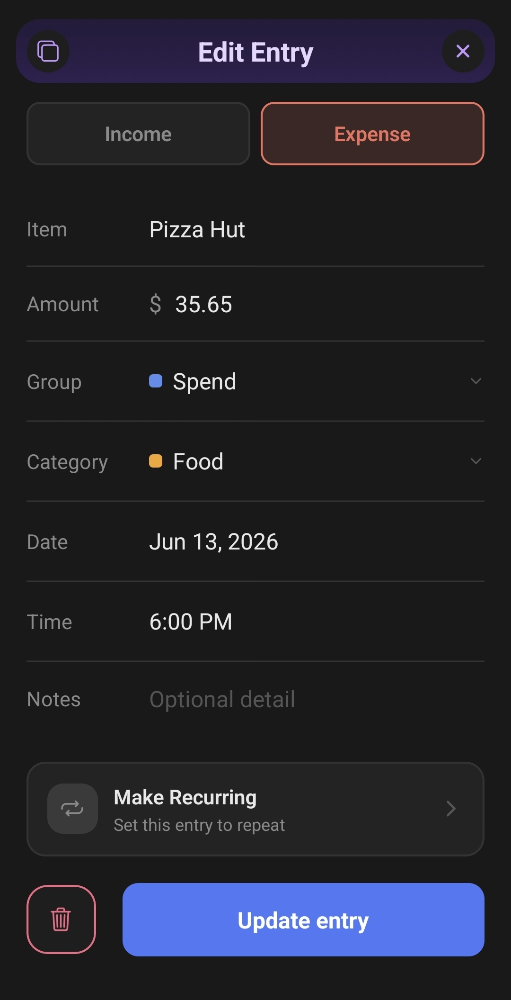
Fields available (Item, Amount, Type, Category, Group, Date, Time, Notes), how editing an entry works, and any quirks worth flagging.
How to duplicate an existing entry to a new date, and why that's faster than re-entering everything by hand.
Searching across all months by item, category, or notes.
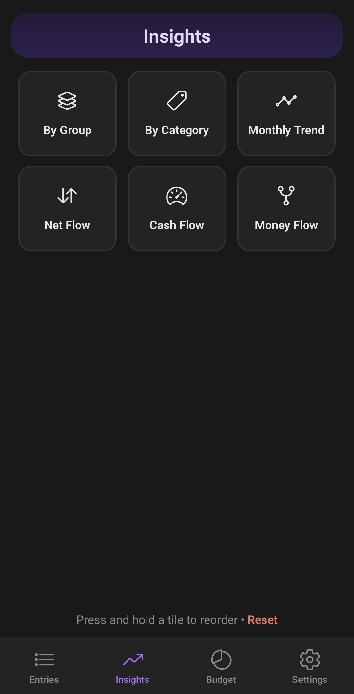
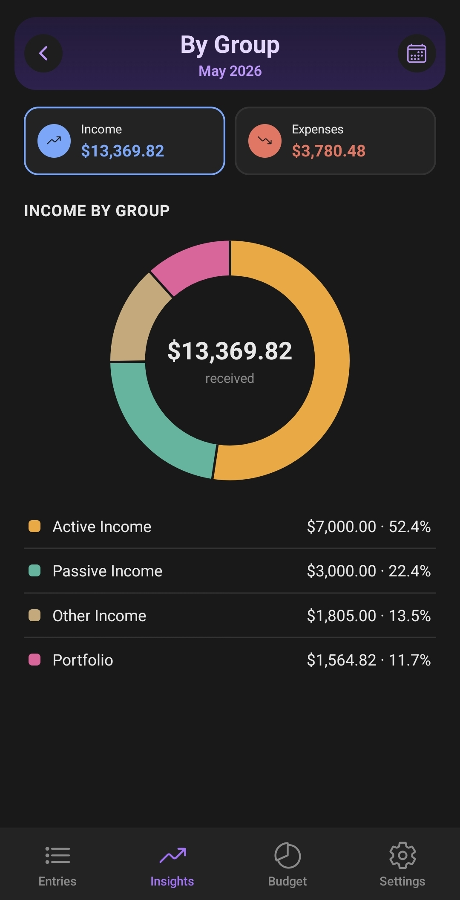
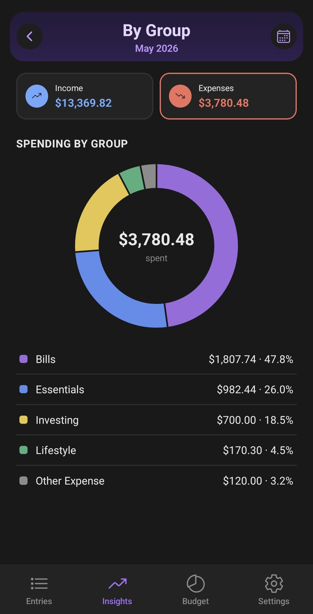
By Group gives you the widest possible zoom-out on your spending — a donut chart broken down purely by Group (the big-picture bucket), not the finer Category level underneath it.
Use this when you want a quick, top-level read on where your money went overall — "how much of my month was Bills vs. Food vs. Transport" — without getting into the specific Categories inside each Group.
Each slice represents one Group's total spend for the selected month, sized proportionally, with a legend below listing the exact amount and percentage for each. Tap any slice or list row to see its Categories broken down further, or head to By Category for that level of detail directly.
When to use By Group vs. By Category: start here if you want the big picture first, then drill into By Category once you've spotted a Group that looks bigger than expected.
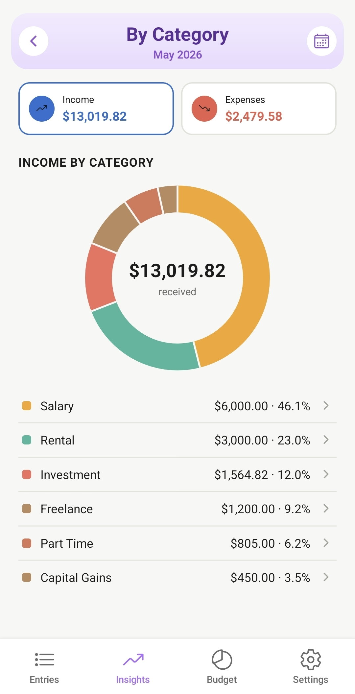
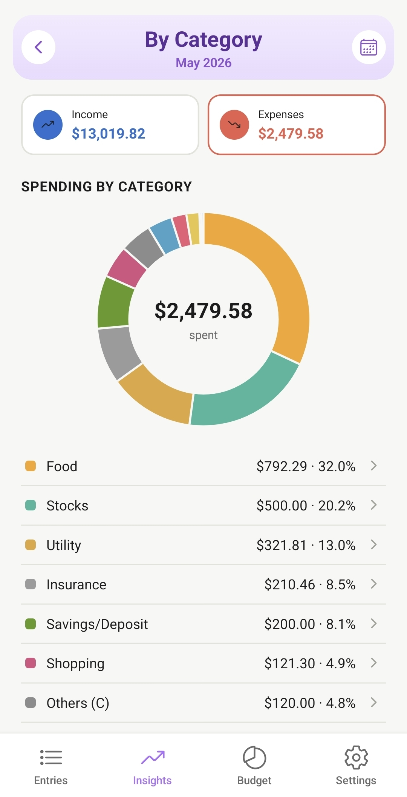
By Category is the same donut-chart idea as By Group, but one level more specific — every slice here represents a single Category (like Mobile, Internet, or Groceries), not the wider Group it sits under.
This is the view to use when you already know roughly where your spending is concentrated and want the exact breakdown — e.g. you know Bills is high this month, and want to see exactly how much of that was Mobile vs. Internet vs. Utility.
Each slice has a thin divider line between it and its neighbors, so even categories with similar colors stay easy to tell apart at a glance. The list below the chart shows every category's exact dollar amount and percentage of your total, with the biggest spenders naturally standing out.
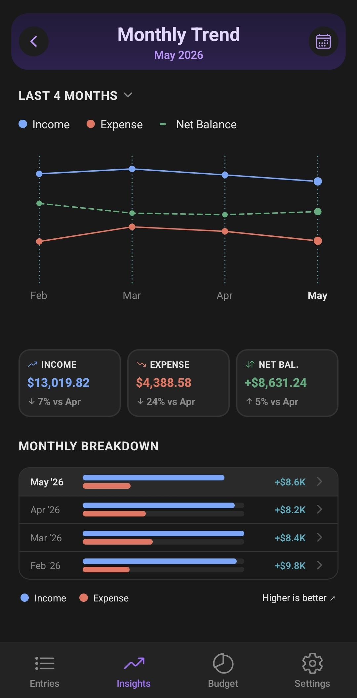
Monthly Trend shows how your Income, Expense, and Net Balance move over time, plotted together on one line chart — solid blue for Income, solid red for Expense, and a dashed green line for Net Balance (Income minus Expense).
Use the dropdown at the top to view the last 4, 6, 9, or 12 months. Your choice is remembered the next time you open this screen.
As long as your dashed green Net Balance line stays above your red Expense line, you're spending less than you earn that month — a healthy sign. A thin dotted guide line runs vertically at each month so you can trace exactly where each line sits at a glance.
If you're brand new and only have one month of data tracked so far, you'll see a faded, dashed line rising from a "Start" point up to your real numbers — this is just a visual guide showing progression, not a real second month of data.
Above the chart, three cards show your currently selected month's Income, Expense, and Net Balance, each with a "vs previous month" percentage underneath — an up arrow for improvement, down for decline. (For Expense, a decrease is the good direction, so it's the down arrow that's shown positively.)
Below the chart, every month in your selected range is listed newest-first, each with a mini bar comparing that month's Income against Expense, plus the resulting Net Balance. Bar lengths are scaled consistently across the whole list, so you can compare bar length between different months meaningfully — not just within a single row.
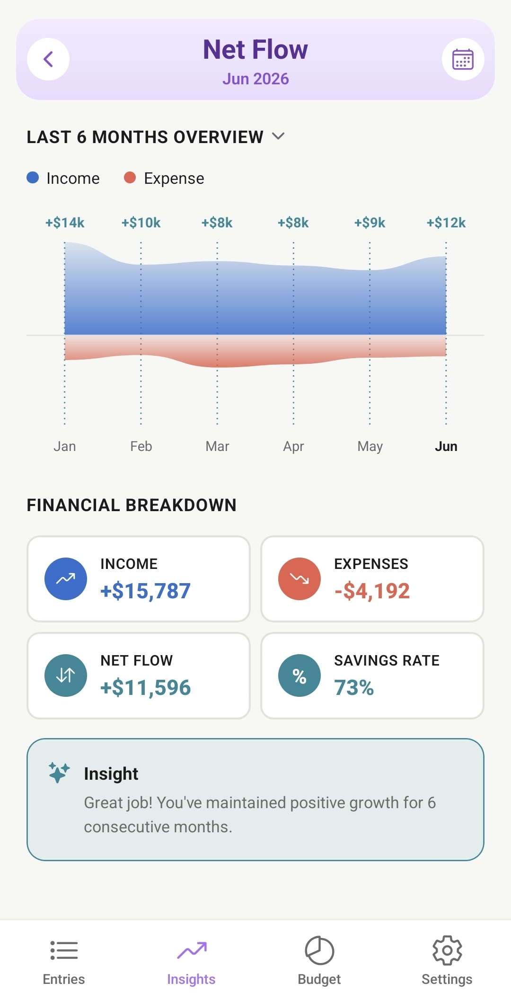
Net Flow visualizes your Income and Expense as two flowing bands — blue for Income rising above a center line, coral for Expense dipping below it — sized so the height of each band is genuinely proportional to the real dollar amount. A month where you earned $26,000 will show a dramatically taller blue band than a month where you earned $2,000 — the scale is shared and consistent across your whole selected range.
Choose 4, 6, 9, or 12 months from the dropdown at the top, same as Monthly Trend.
Above each month, a single number shows that month's Net (Income minus Expense), colored to match your savings-rate tier for that month — the same red / amber / green / teal system used on Cash Flow. A teal "FIRE Level" figure here means that month hit 40%+ savings, exactly as it would on your Cash Flow ring.
At 9 or 12 months, labels alternate between two rows to avoid crowding, and the dotted guide line for each month is tinted to match that month's tier color too.
Below the chart, four cards summarize your currently selected month: Income (always blue), Expenses (always coral), Net Flow, and Savings Rate — the last two both colored by your tier for that month, so they always agree with each other and with the chart above.
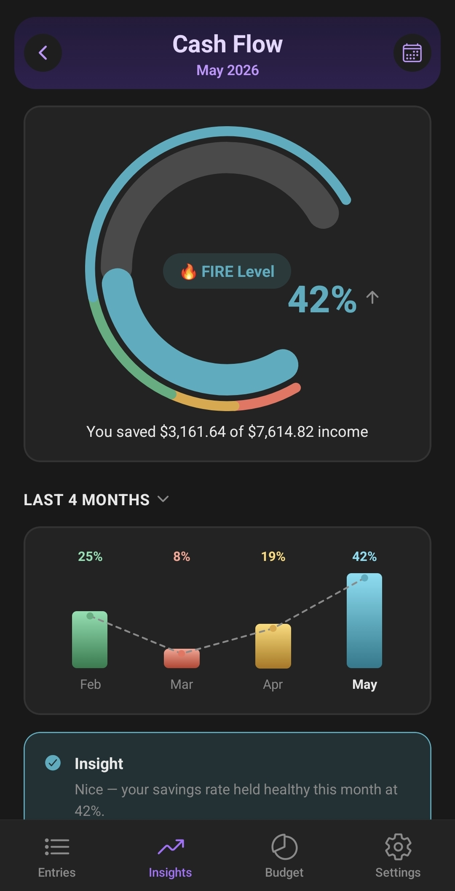
Cash Flow answers one question at a glance: what percentage of your income are you actually keeping? Your savings rate — (Income − Expense) ÷ Income — is shown as a ring gauge, colored and labeled by which of 4 tiers it falls into.
The ring has an opening at its lower-right, where your percentage and trend arrow sit — your tier's name (e.g. "Healthy") appears as a badge in the ring's center. The thin outer rim is a fixed legend, always showing the full red-to-teal spectrum regardless of your current value, so you can see at a glance how close you are to your next tier. The thick inner ring is your actual result — its length shows your percentage, and its color always matches your current tier exactly.
Below the ring, a line spells it out in plain terms: "You saved $X of $Y income."
Below the gauge, a bar for each month in your selected range (4, 6, 9, or 12 months, chosen from the dropdown) shows your savings rate over time, colored by tier, connected by a dashed line so you can see whether you're trending toward or away from a healthier tier.
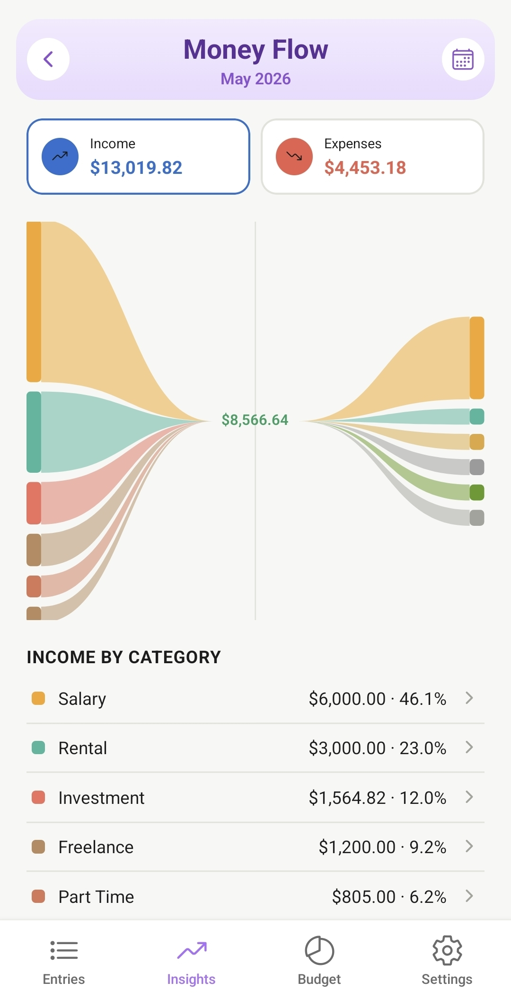
Money Flow shows where your money came from and where it went, as one continuous diagram — this style of chart is called a Sankey diagram, and it's especially good at showing "flow" between sources and destinations.
Read it left to right: on the left, each colored band is one Income source (e.g. Bonus, Rental, Allowance), sized by how much it contributed. Those bands converge in the middle into your total Net saved for the month. From there, on the right, the flow splits back out into your Expense categories, each band sized by how much you spent in that category.
Two summary cards at the top show your total Income and Expenses for the selected month. Below the diagram, "Income by Category" and "Expenses by Category" lists give you the exact dollar amount and percentage behind each band — tap any row to see more detail.
This is the view to use when you want to see the full picture in one glance — not just "how much did I spend on Food," but "how did my Bonus and Rental income actually end up covering my Food, Transport, and Bills this month."
Budgets let you set a spending limit for a specific Category — not a whole Group.
For example, you could set a $50 monthly budget on Mobile and a separate $30 budget on Internet. Each budget is tracked independently, even though both categories sit under the same "Bills" Group.
As you log expenses under a budgeted category, the app automatically compares your actual spending against the limit you set — so you can see at a glance whether you're on track or over budget for that category.
Why by Category and not by Group? Budgets work best when they're specific. A Group like "Bills" can cover very different expenses with very different limits — setting one budget per Category (Mobile, Internet, Utility, etc.) gives you a much clearer picture of exactly where you're overspending, rather than one blurry number for the whole Group.
Setting your name and photo, choosing your currency (no longer locked to SGD — display/formatting only, not conversion), and what's shown in the About section.
Creating, editing, reordering (drag-to-reorder), and deleting Groups. Cross-reference the "Groups vs Categories" topic under Entries for the concept itself.
Creating, editing, reordering, and deleting Categories, and how they nest under Groups.
Out of the box, Money Manager comes with 4 Income Groups, each with a starting set of Categories underneath. You can rename, recolor, reorder, or add your own at any time — this is just the default starting point.
The Expense side follows the same idea — 5 Groups, each with a starting set of Categories underneath, all fully customizable.
How this tile relates to the main Budget tab — confirm if this is just a shortcut, or has settings of its own worth documenting separately.
Some transactions happen like clockwork — your salary, rent, a subscription, your daily commute. Instead of entering them by hand every time, set them up once as Recurring, and Money Manager keeps track of the schedule for you.
When you create a recurring transaction, choose how often it repeats:
If you choose a Specific Day near the end of the month (like the 30th or 31st), don't worry about short months — if a month doesn't have that day, Money Manager automatically uses that month's last day instead, so nothing gets skipped.
Your Recurring screen keeps entries in two groups:
If a subscription goes on pause or you want to stop tracking something without losing your history, tap into the entry and select Turn Off Recurring. It'll move to Stopped, and you can always set it up again later.
⚠️ Note: editing an entry's category currently updates only that one occurrence, not the recurring template itself — a fix is under consideration. Amount/item edits are intentionally occurrence-only by design.
How CSV backup works, what gets included (and what doesn't — e.g. your profile photo), and best practices for how often to back up.
Switching from another expense tracker? You can bring your old data into Money Manager by converting it into a CSV file that matches our template, then using Settings → Restore to load it in.
The easiest way to convert your old data: copy the prompt below, paste it into any AI chatbot (ChatGPT, Claude, Gemini, etc.) along with your old export file, and it'll do the reformatting for you.
Your converted CSV needs exactly these 8 columns, in this order:
D/M/YYYY (e.g. 3/8/2026 for 3 August 2026, not US-style month-first)H:MM or HH:MM (e.g. 9:30 or 14:45)Income or ExpenseSpend, Subscription, or Investment45.90, not $45.90)Paste this into your AI chatbot along with your old export file:
Please convert the transaction data I give you into a CSV file with exactly these 8 columns, in this exact order: Item, Amount, Type, Category, Group, Date, Time, Notes Formatting rules: - Item: the merchant name or description of the transaction - Amount: a plain number with no currency symbol (e.g. 45.90) - Type: exactly "Income" or "Expense" - Category: keep my existing category names, just remove any emoji - Group: classify each entry as exactly "Spend", "Subscription", or "Investment" — use "Spend" as the default for everyday purchases and income, "Subscription" only for recurring subscription services, and "Investment" only for stock/brokerage/investment-related transactions - Date: format as D/M/YYYY (day first, then month, then year — NOT US-style month-first). Example: 3/8/2026 means 3 August 2026 - Time: 24-hour format, H:MM or HH:MM (e.g. 9:30 or 14:45) - Notes: leave blank unless there's extra context worth keeping Please output the result as a downloadable CSV file with a header row matching the column names above.
⚠️ Restoring replaces all current data on your device — this can't be undone. If you already have entries in the app, back them up first (Settings → Backup) before restoring.
Dark / Light / System options, and where the app-wide purple accent comes from.
Life gets busy — the Daily Reminder gives you a gentle nudge each day to log what you earned and spent yesterday, so nothing slips through the cracks.
Turn it on in Settings → Reminder, and pick a time that works for you. When it fires, you can log an entry straight from the notification — no need to even open the app first.
When you'd need to restore (new device, reinstall) and how to do it.